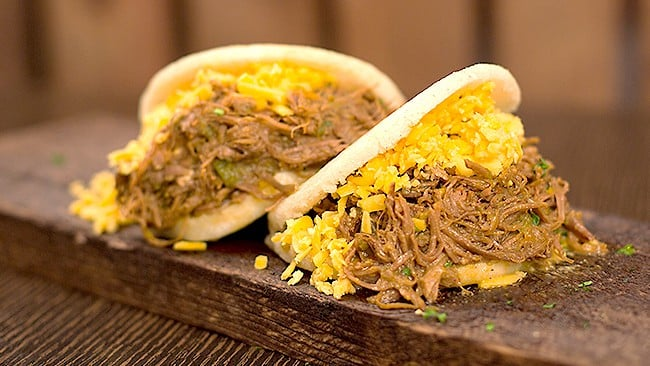

La Pelua

Básicamente se trata de una arepa hecha de harina de maíz rellena con carne mechada y queso amarillo rallado. Debido a su relleno funciona muy bien para cualquier ocasión, a la hora del desayuno, cena o, incluso como almuerzo.
Ingredients
- 4 arepas de harina de maiz precocida
- 500g de carne mechada
- 300 g de queso amarillo rallado (cualquier tipo)
- 1 cucharada de mantequilla
Preparacion
- Abrir las arepas de forma longitudinal
- Untar de mantequilla la parte interna de la arepa
- Rellenar con una cucharada de carne mechada y una cucharada de queso amarillo.
- Servir envuelta en servilletagit s